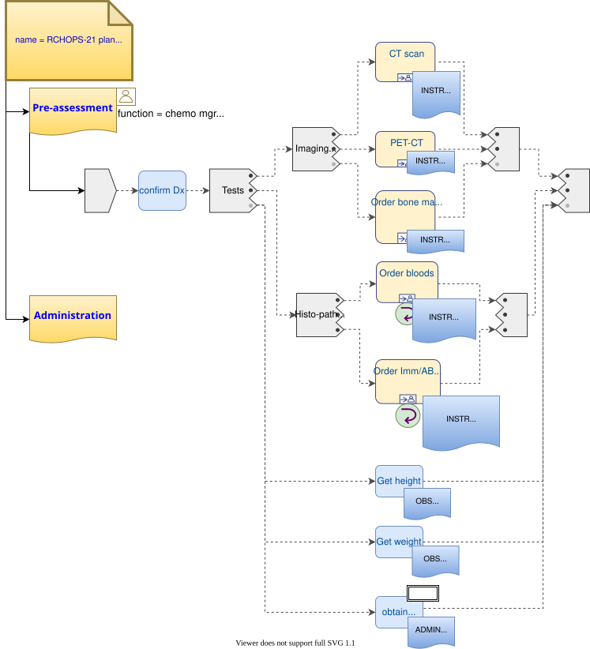
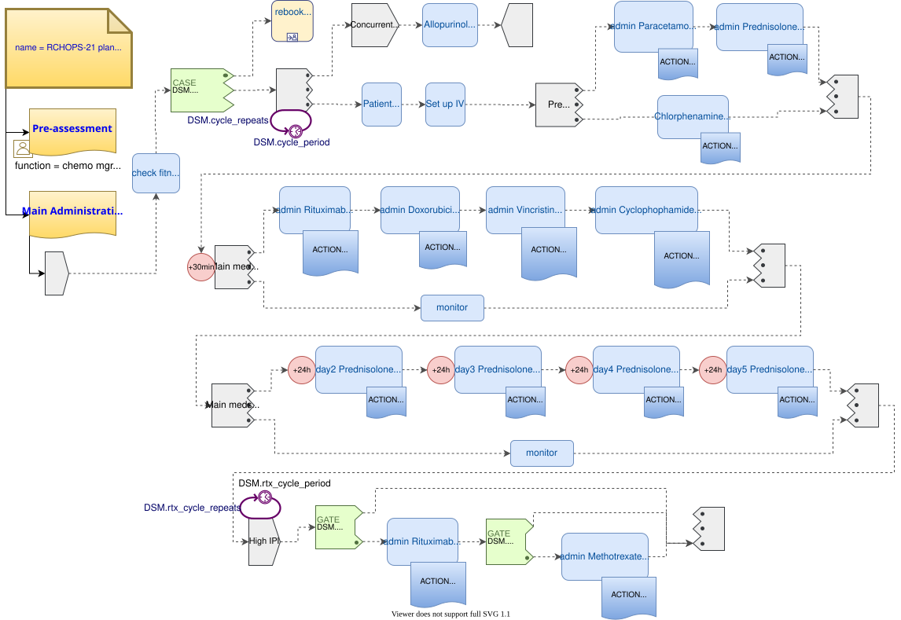

Multi-drug Chemotherapy
This section illustrates multi-drug chemotherapy with complex dosing and timing arrangements.
This example is based on the version of RCHOPS-21 documented by NHS Thames Valley Cancer Network.
Limitations
The following elements of the plan are not yet included (mainly for brevity of the example):
-
Vincristine dose modification due to hepatic impairment;
-
Concurrent meds only shown in summarised form;
-
Exception pathways to handle patient reactions not shown.
Plan Definition
The following shows the pre-medication phase.

Figure 1. RCHOPS21 pre-med phase
The following shows the main regime, including conditional addition of Rituximab / methotrexate for high IPI patients.

Figure 2. RCHOPS21 administration phase
RCHOPS21 Decision Logic Module
dlm RCHOPS21
definitions -- Descriptive
language = {
original_language: [ISO_639-1::en]
}
;
description = {
lifecycle_state: "unmanaged",
original_author: {
name: "Thomas Beale",
email: "thomas.beale@openEHR.org",
organisation: "openEHR Foundation <http://www.openEHR.org>",
date: "2021-01-10"
},
details: {
"en" : {
language: [ISO_639-1::en],
purpose: "NHS CHOPS-21 chemotherapy guideline ...."
}
}
}
;
use
BSA: Body_surface_area.v0.5.0
preconditions
has_lymphoma_diagnosis
definitions -- Reference
paracetamol_dose: Quantity = 1g;
chlorphenamine_dose: Quantity = 10mg;
prednisolone_dose_per_m2: Quantity = 40mg;
rituximab_dose_per_m2: Quantity = 375mg;
doxorubicin_dose_per_m2: Quantity = 50mg;
vincristine_dose_per_m2: Quantity = 1.4mg;
cyclophosphamide_dose_per_m2: Quantity = 750mg;
cycle_period: Duration = 3w;
cycle_repeats: Integer = 6;
input -- State
has_lymphoma_diagnosis: Boolean
time_window = tw_current_episode
input -- Tracked state
staging: Terminology_term «ann_arbor_staging»
currency = 30 days
time_window = tw_current_episode
;
has_metastases: Boolean
currency = 30 days
time_window = tw_current_episode
;
|
| Neutrophils
|
neutrophils: Real
currency = 3d,
ranges["/L"] =
--------------------------------
|>1 x 10^9|: #high,
|0.5 - 1 x 10^9|: #low,
|<0.5 x 10^9|: #very_low
--------------------------------
;
|
| Platelets
|
platelets: Real
currency = 12h,
ranges["/L"] =
------------------------------
|>75 x 10^9|: #normal,
|50 - 74 x 10^9|: #low,
|<50 x 10^9|: #very_low
------------------------------
;
|
| Bilirubins
|
bilirubin: Real
currency = 12h,
ranges["mmol/L"] =
----------------------------
|<20|: #normal,
|20 - 51|: #high,
|51 - 85|: #very_high,
|>85|: #crit_high
---------------------------
;
|
| Glomerular filtration rate
|
gfr: Real
currency = 24h,
ranges["mL/min"] =
----------------------
|>20|: #normal,
|10 - 20|: #low,
|<10|: #very_low
----------------------
;
|
| Lactate dehydrogenase
|
ldh: Real
currency = 24h,
ranges["mL/min"] =
--------------------------
|>20 |: #normal,
|10 - 20|: #low,
|<10|: #very_low
--------------------------
;
rules -- Conditions
high_ipi:
Result := ipi_risk ∈ {#ipi_high_risk, #ipi_intermediate_high_risk}
;
rules -- Main
|
| patient fit to undertake regime
|
patient_fit:
Result := not
(platelets.in_range (#very_low) or
neutrophils.in_range (#very_low))
;
prednisolone_dose: Quantity
Result := prednisolone_dose_per_m2 * BSA.bsa_m2
;
rituximab_dose: Quantity
Result := rituximab_dose_per_m2 * BSA.bsa_m2
;
doxorubicin_dose: Quantity
Result := doxorubicin_dose_per_m2 * BSA.bsa_m2
* case bilirubin.range in
====================
#high: 0.5,
#very_high: 0.25,
#crit_high: 0.0
====================
;
|
| TODO: hepatic impairment dose modification
|
vincristine_dose: Quantity
Result := vincristine_dose_per_m2 * BSA.bsa_m2
;
|
| CHECK: is low platelets and GFR dose modification
| cumulative?
|
cyclophosphamide_dose: Quantity
Result := cyclophosphamide_dose_per_m2 * BSA.bsa_m2
* case platelets.range in
===================
#normal: 1,
#low: 0.75
===================
;
* case gfr.range in
===================
#normal: 1,
#low: 0.75,
#very_low: 0.5
===================
;
|
| International Prognostic Index
| ref: https:|en.wikipedia.org/wiki/International_Prognostic_Index
|
| One point is assigned for each of the following risk factors:
| Age greater than 60 years
| Stage III or IV disease
| Elevated serum LDH
| ECOG/Zubrod performance status of 2, 3, or 4
| More than 1 extranodal site
|
| The sum of the points allotted correlates with the following risk groups:
| Low risk (0-1 points) - 5-year survival of 73%
| Low-intermediate risk (2 points) - 5-year survival of 51%
| High-intermediate risk (3 points) - 5-year survival of 43%
| High risk (4-5 points) - 5-year survival of 26%
|
ipi_raw_score: Integer
Result.add (
---------------------------------------------
age > 60 ? 1 : 0,
staging ∈ {#stage_III, #stage_IV} ? 1 : 0,
ldh.in_range (#normal) ? 1 : 0,
ecog > 1 ? 1 : 0,
extranodal_sites > 1 ? 1 : 0
---------------------------------------------
)
;
ipi_risk: Terminology_code
Result :=
case ipi_raw_score in
=======================================
|0..1| : #ipi_low_risk,
|2| : #ipi_intermediate_low_risk,
|3| : #ipi_intermediate_high_risk,
|4..5| : #ipi_high_risk;
=======================================
;
definitions -- Terminology
terminology = {
term_definitions: {
"en" : {
"paracetamol_dose" : {
text: "paracetamol dose",
description: "paracetamol base dose level per sq. m of BSA"
},
"chlorphenamine_dose" : {
text: "chlorphenamine dose",
description: "chlorphenamine base dose level per sq. m of BSA"
},
"staging" : {
text: "Cancer staging",
description: "Cancer staging (Ann Arbor system)"
},
"has_metastases" : {
text: "Metastatic status",
description: "Status of metastasis of cancer"
},
"neutrophils" : {
text: "neutrophils",
description: "neutrophils level"
},
"platelets" : {
text: "platelets",
description: "platelets level"
},
"ipi_low_risk" : {
text: "low risk: 5y survival - 73%",
description: ".."
},
"ipi_intermediate_low_risk" : {
text: "intermediate-low risk: 5y survival - 51%",
description: ".."
},
"ipi_intermediate_high_risk" : {
text: "intermediate-high risk: 5y survival - 43%",
description: "..."
},
"ipi_high_risk" : {
text: "high risk: 5y survival - 26%",
description: "..."
}
}
}
}